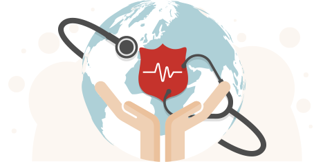
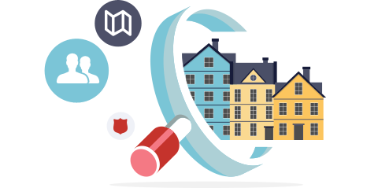

세상 가장 낮은 곳을 향한
구세군의 손길

우리 이웃의 작은 신음에도 귀 기울입니다.
도움이 필요한 곳에 구세군이 있습니다.
우리는 섬겨야 할 지역사회를 찾아 무엇이 필요한지를 고민합니다.
무엇이 문제인지, 어떻게 하면 극복할 수 있을지를 연구하며 선을 이루고자 노력합니다.
자원을 모으고 프로그램을 적용합니다.
그 후, 우리는 지역사회를 위한 프로그램을 개발하며, 자원을 확보합니다.
때로는 긴급한 지원이 필요하기도 하고, 상황에 따라
단기적, 장기적 접근이 필요하기도 합니다.
그러나 무엇보다도 지역사회와 공동체가 가장 건강해 질 수 있도록
프로그램을 적용합니다.

지역사회를 살립니다.
구세군은 지역사회와 공동체가 자생력을 가지고 자활 할 수 있도록
영적으로, 물질적으로, 정서적으로 지원하며 건강한 사회를 가꾸어 나갑니다.